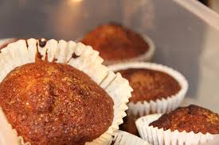

Info
These Banana Muffins are pretty much a family recipe. It's the recipe I go to whenever I need one for a school assignment, potluck, or group breakfast. It's flexible, and has been around for as long as I can remember. It's a common find on our kitchen counter.
Banana muffins are a staple in our house, because they’re easy to make to not waste food when it’s going bad.
- Joanna, older sister to author
Yummy plain, or you can add pecans or chocolate chips.
- Harriet, mother of author
The Recipe
| Ingredient | Amount | |
|---|---|---|
| Sugar | 1 1/2 cup | |
| Shortening(crisco or butter) | 1/2 cup | |
| Eggs | 2 | |
| Dried Buttermilk or Buttermilk | 2 Tbsp or 1/2 cup | |
| Water (no normal buttermilk) | 1/2 cup | |
| Flour | 1 1/2 cup | |
| Salt | 1/4 tsp | |
| Baking Soda | 1 tsp | |
| Soft Bananas, Mashed | 3 | |
| Vanilla | 1 tsp |
Instructions
Approximate time: 45 minutes
Serving size: 18 muffins
- Preheat Oven to 350 degrees Farenheit
- Line 18 muffin cups with liners
- Cream together sugar and shortening
- Add eggs one at a time and beat after each egg
- Add dry ingredients and water or buttermilk
- Add bananas and vanilla last
- Pour batter into muffin cups and bake for 25 minutes
- Enjoy!
Optional Addtions:
- Chopped Nuts, 1/2 cups
- Chocolate Chips, 1/2 cups
My personal favorite is just the plain muffins, but these are also nice when added